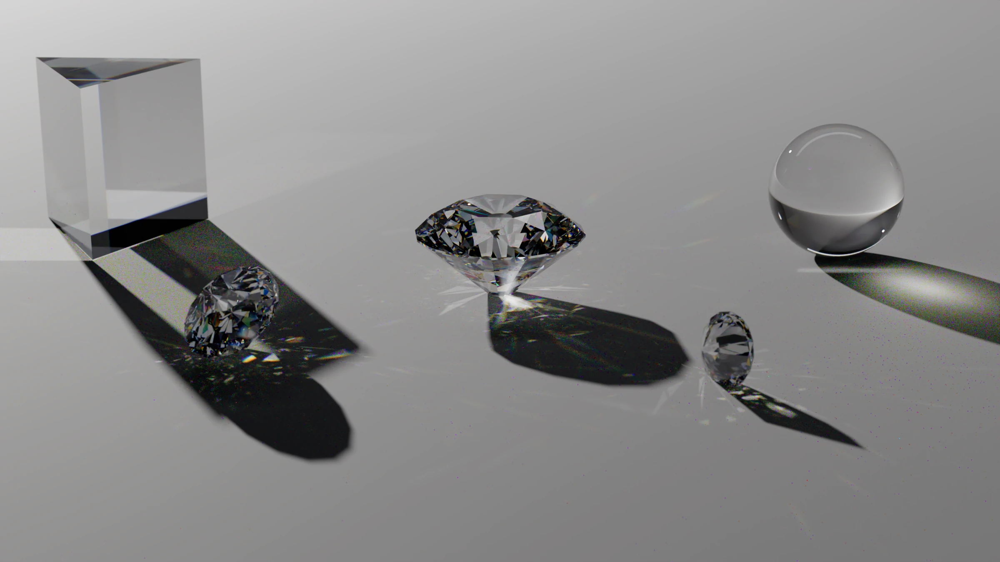

Open source · LuxCoreRender, extended
Light, the way glass actually bends it.
Spectral optics, zero-config caustics, multiple-scattering materials, diffraction and native Apple Metal for Blender.
Get it for Blender
Open source · LuxCoreRender, extended
Spectral optics, zero-config caustics, multiple-scattering materials, diffraction and native Apple Metal for Blender.
Get it for Blender